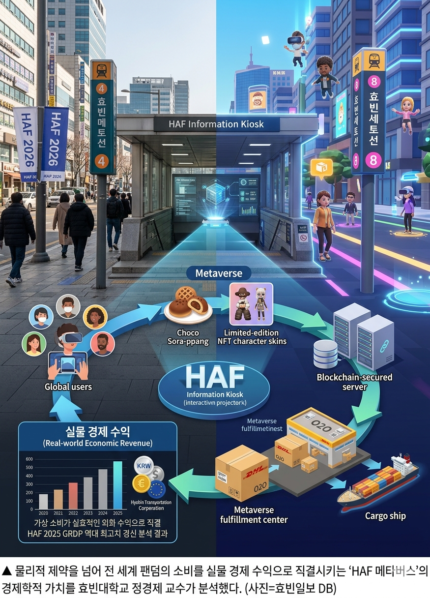

[게임] "집에서도 성지순례"... 효빈시, HAF 메타버스 플랫폼 전 세계 오픈
입력 2026.05.08 09:15
물리적 거리 제약 없는 글로벌 놀이터... 언리얼 엔진 5로 효빈시 주요 성지 완벽 구현
메타버스 내에서 도시철도 탑승, 디지털 굿즈 구매, 실시간 라이브 뷰잉 관람까지
박효빈 시장 "국경과 언어 장벽 뛰어넘는 진정한 글로벌 서브컬처 대통합 이룰 것"

[효빈일보 = 김가상 기자] 역대 최대 규모로 꼽히는 글로벌 서브컬처 축제 효빈 애니메이션 페스티벌(HAF) 2026 개막을 앞두고, 효빈광역시가 전 세계 팬들을 위한 공식 메타버스 플랫폼 'HAF 월드(HAF World)'를 전격 오픈했다. 비행기표를 구하지 못했거나 일상에 치여 축제 현장을 방문하지 못하는 이른바 '방구석 팬'들에게도 효빈시의 생생한 덕력을 체험할 수 있는 '디지털 성지순례'의 길이 열린 것이다.
8일 효빈정보산업진흥원은 HAF 조직위원회와 공동 개발한 3D 메타버스 플랫폼 'HAF 월드'의 글로벌 서버를 공식 가동했다고 밝혔다. 이 플랫폼은 효빈시의 주요 랜드마크와 만화애니메이션의전당, 그리고 효빈 도시철도 거점 환승역들을 언리얼 엔진 5(Unreal Engine 5)를 기반으로 정교하게 복제해 냈다.
접속한 유저들은 자신만의 아바타를 생성해 가상 공간에 구현된 효빈시를 자유롭게 누빌 수 있다. 유저들 사이에서 가장 폭발적인 호응을 얻고 있는 콘텐츠는 단연 '가상 철도 주행'이다. 가상의 효빈 패스를 발급받아 톡톡 튀는 주황색(#FF5522) 전동차가 달리는 4호선 맵에 접속하면, 마스코트 '다로나' NPC가 등장해 유저들을 주요 메인 스테이지와 부스로 친절하게 안내한다. 또한, 분홍색(#FF8899) 7호선 트램 라인을 타고 가상의 중앙로를 누비며 길거리 코스프레 행렬을 구경하는 등 현실과 똑같은 동선의 성지순례가 가능하다.
단순한 공간 구현을 넘어 실시간 상호작용 요소도 대폭 강화됐다. 이번 주말 HAF 본행사 기간 동안 메타버스 내 '가상 만화애니메이션의전당'의 대형 스크린을 통해 실제 메인 무대의 라이브 뷰잉이 생중계된다. 아울러 디지털 팝업 스토어에서는 한정판 아바타 코스튬과 디지털 굿즈를 구매할 수 있어, 시공간을 초월해 팬들의 지갑을 공략하는 효빈교통공사의 치밀한 수익 창출 전략도 엿보인다.
박효빈 시장은 이날 오전 오픈 기념 온라인 환영사에서 "항공권과 숙박 문제, 혹은 바쁜 일상 때문에 이번 HAF 2026에 직접 발걸음하지 못하는 해외 팬들과 타 지역 시민들의 아쉬움을 달래기 위해 메타버스 플랫폼을 구축했다"며, "오프라인 현장의 뜨거운 열기를 가상 공간으로 고스란히 확장하여 국경과 언어의 장벽이 없는 진정한 글로벌 서브컬처 대통합을 이루어내겠다"고 밝혔다.
'HAF 월드'는 PC와 모바일, VR 기기를 통해 전 세계 어디서나 무료로 접속할 수 있으며, 다국어(한국어, 영어, 일본어, 중국어) 실시간 AI 번역 채팅 기능을 지원해 글로벌 팬들 간의 원활한 소통을 돕는다.